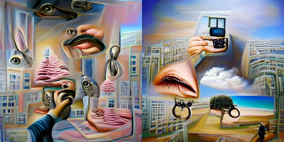

by Athena Novo · Async Art Master #4872 · day/night · time rule: UTC
Updates twice a day to reflect day / night cycles.

Day 06:00–18:59 · Night 19:00–05:59 (UTC)
The full-size files live on IPFS; each is linked on three public gateways, in the order to try them (gateway.pinata.cloud, ipfs.io, dweb.link). Every line says what our own check found: 3 not pinned by us yet, 1 our own copy, pinned here and verified on upload.
Qmf8D5E98wmkeu… gateway.pinata.cloud · ipfs.io · dweb.link — not pinned by us yet, checked 2026-09-23 09:13QmSmWaYGguP2e1… gateway.pinata.cloud · ipfs.io · dweb.link — not pinned by us yet, checked 2026-09-23 09:13bafybeigs6dwqy… gateway.pinata.cloud · ipfs.io · dweb.link — our own copy, pinned here and verified on upload, checked 2026-09-22QmWoM1hMr9M33F… gateway.pinata.cloud · ipfs.io · dweb.link — not pinned by us yet, checked 2026-09-23 09:13Qmf8D5E98wmkeu… gateway.pinata.cloud · ipfs.io · dweb.link — not pinned by us yet, checked 2026-09-23 09:13Qmf8D5E98wmkeu… gateway.pinata.cloud · ipfs.io · dweb.link — not pinned by us yet, checked 2026-09-23 09:13QmSmWaYGguP2e1… gateway.pinata.cloud · ipfs.io · dweb.link — not pinned by us yet, checked 2026-09-23 09:13Athena's Concept: Criminal Technology II by Athena Novo 2 piece set in one single artwork, Minted 1/1 on Async Art, 2022 Athena's Concepts are a series of artworks exploring subject matter from sensuality to cats in basic abstract form.
async.art · OpenSea · Etherscan
Generated archive pages. Content identifiers point to the public IPFS network.